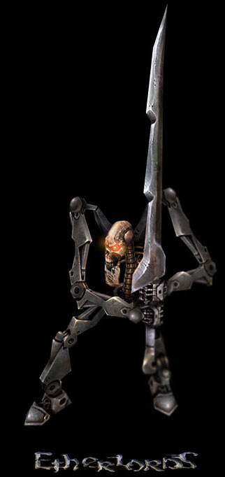

Назад
Содержание
Вперед
KuDer

Синтеты - обзор расы
Синтеты являются одной из самых оригинальных рас в жанре походовых стратегий. Впервые, помнится, идея вставить в фэнтезийную игру расу полумеханических существ промелькнула в Heroes III: Armageddon's Blade, но там она так и не была реализована.
По легенде "Демиургов" синтеты - порождения Черного Эфира Синтеза, воплощение симбиоза живого и неживого, плоти и металла. Они считаются холодными, расчетливыми и бездушными. Даже имен у их героев нет, только маркировка: Alpha-001 "Аннигилятор", Beta-002 "Воитель" и т. п.
Что же касается игры за синтетов, то научиться ими управлять сложновато. Однако если преуспеть в этом, результат оправдает все ожидания, ибо синтет способен в бою связать соперника по рукам и ногам как никто!
Сперва о главном - о магии. Магия синтетов, в отличие других рас, работает, как правило, "в двух направлениях". То есть, например, если спелл что-то повышает, то потом или даже сразу он может понизить эту же или какую-нибудь другую характеристику. Многие достойные в плане силы/здоровья существа могут иметь при себе какую-либо дополнительную пакость, так что встает вопрос: вызывать или не вызывать?! В этом, как может показаться, слабость расы. Но в этом также и ее сила. Ведь посудите сами, если заклинание имеет двоякий эффект, то его можно использовать как на себе и своей армии, так и на противнике! Например, такой дурацкий пример. "Перегрузка", относительно простое заклятие, сначала добавляет создание по 5 силы и здоровья, но затем каждый ход отнимает по 2 и того, и другого. Можно при помощи этого спелла сделать из своих существ мощную, но "одноразовую" армию, которая будет конкурентоспособна всего 2-3 хода, а потом благополучно отойдет в лучший из миров. Но если вы хотите извести какого-нибудь вражеского монстра, то можно его обкастовать этим заклинанием, и он сам рано или поздно подохнет (при этом придется пожертвовать здоровьем героя или какой-нибудь шушерой на блокировку). Чувствуете силу?
Конечно, есть у синтетов и спеллы, работающие напрямую, без "подвохов", но их - меньшинство.
У синтета с грамотно подобранной "колодой" должна найтись контратака на любое или почти любое действие противника (хотя, справедливости ради, замечу, что этого при желании можно добиться при игре за любую расу).
Теперь поподробнее о монстрах/созданиях/существах/кричах - кому как нравится. "Живности" у синтетов много. Причем даже самый примитивный механический червяк 1/1 имеет ряд полезнейших свойств, что уж говорить об остальных!
Существа тоже могут иметь свои "подвохи", причем некоторых случаях эти гадкие "фичи" созданий могут принести ощутимый вред герою-владельцу. Поэтому, играя за синтетов, нужно особенно тщательно обмозговывать процесс покупки заклинаний и созданий, изучать дополнительные прибамбасы заклятий и существ. Некоторые монстры, несмотря на кажущуюся мощь, могут стать обузой в бою. Снова пример. Скажем, стальной мехозвар, имеет такие параметры: 8/6 (что очень неплохо), "кровожадный" (хорошо, потому что если его при атаке заблокирует существо со здоровьем, меньшим, чем сила мехозавра, он нанесет герою врага дополнительный урон, равный разности своей силы и здоровья блокирующего), "вампир" (хорошо, потому как если он атакует героя врага, то перекачивает владельцу соответствующее количество здоровья), "магический экран" (с одной стороны, хорошо, враг его ни в жисть не обкастует, но с другой стороны, владелец его тоже зачаровать не может) и, наконец, "паразит" - само плохое, каждый ход отнимает у владельца трешник здоровья. Вот и думайте, что вам важнее: сила монстра или то, что он из вас кровушку сосать будет всю битву...
Магию рассмотрели, монстров тоже, а теперь позволю себе выдать несколько тактических комбинаций, помогающих мне в бою.
В начале боя очень полезно "Бессилие", укладывающее создание врага баиньки, пока тот не разбудит его, отдав 3 ед. Эфира. Улучшенный вариант - "Парализация", теперь враг должен будет отдать 2 Эфира и 2 здоровья.
Убойно-пробивная схема. Есть несколько вариантов исполнения: с несколькими "Перегрузками", а также с "Альфа-ударом". Также необходима "Маска ужаса" и существо не меньше 6/6. Берем существо (скажем, стальной мехос 8/6). Кастуем на него "Маску", "Перегрузку" и "Альфа-удар". NB: Если используете "Альфа-удар", будьте готовы к тому, что монстр сдохнет после атаки!
Итак, наш мехос приобретает силу 8+8+5=21, здоровье снижается до 1, блокировать его не могут, и он наносит врагу чудовищный урон. Если желаете, чтобы монстр продержался подольше, то, как я уже сказал, вместо "Альфы" кстаните еще одну-две "Перегрузки" (ежели есть, конечно).
Хитрая схема уничтожения существ. Если хотите избавиться от монстра врага быстро и сразу, но полезного заклинания "Изгнание", убирающего существо с поля боя, на руках не имеете, то можно скастовать на монстра "Лишение силы" (снижает силу на 6, и потому трюк действует только на созданий с силой 6 или меньше) и "Перестановку", меняющую силу и здоровье местами. Сила, равная нулю, становится на место здоровья, и монстр дохнет...
Как я уже говорил выше, можно скастовать на вражьего крича "Перегрузку", несколько ходов его блокировать всякой мелочью типа червячков или птеросов и злобно смеяться, когда этот монстр помрет. Попробуйте с синими драконами, если мелюзги в колоде много.
Можно попробовать сделать костяком армии существ со свойством "готовность", не отдыхающих после вызова, таких, как механические червяки 1/1 или прыгуны. Если их "прокачать" "Перегрузкой" или, на худой конец, "Искаженным улучшением", то они превратятся в мощную и вместе с тем дешевую "одноразовую армию". Тем более, имея на руках этих существ, вы всегда обладаете правом первого удара. Но лично я считаю, что одними прыгунами и червями играть не интересно, ведь так много других существ!
Это только несколько трюков синтетов, но уже по ним можно увидеть, как богаты возможности расы. И так ими можно вертеть, и эдак! Главное - подключить соображалку, и тогда проблем не будет!
Синтеты - очень сильная раса. Попробуйте сыграть за них хотя бы пару-тройку "одиночек", оцените их возможности. Ручаюсь, вам понравится!
Назад
Содержание
Вперед